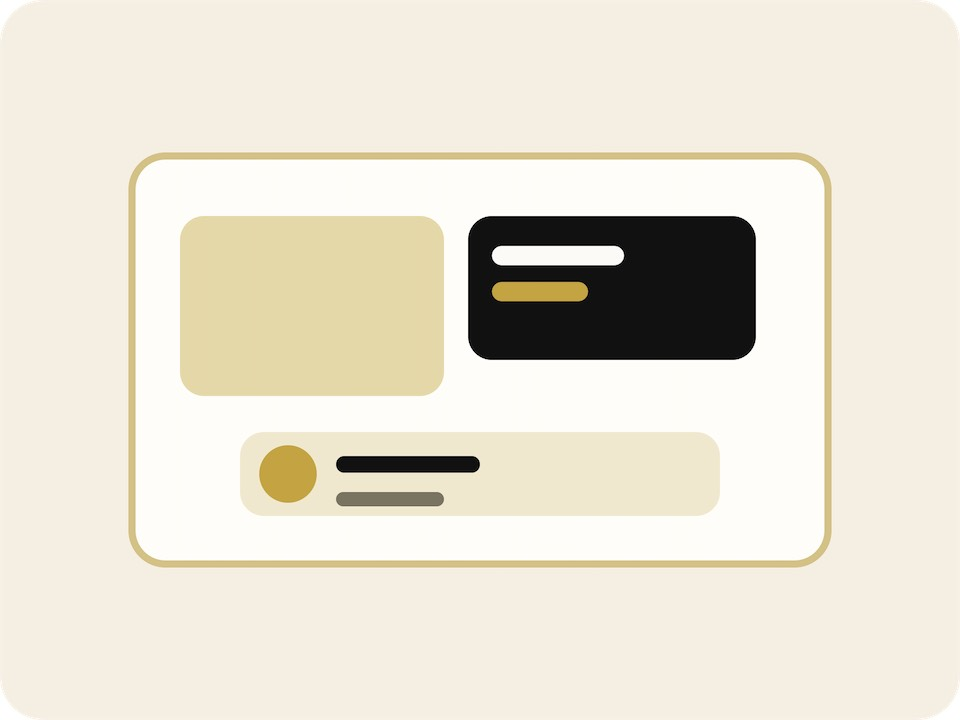

1. Consultation and goal setting
The first appointment usually focuses on priorities. Some patients want brighter teeth, others want to correct shape, spacing, or worn edges. This step is where photographs, scans, and a clear discussion of goals start to shape the plan.
2. Digital planning and sequencing
Once records are complete, the team maps out which procedures need to happen first. Whitening may come before veneers, orthodontic movement may happen before cosmetic bonding, and gum contouring may be discussed if smile balance needs refinement.
3. Preparation appointments
Depending on the plan, this phase may involve minimal preparation, temporary restorations, or short review visits to confirm fit and appearance. Patients usually benefit from asking about timing before major events so the schedule can be planned around them.
4. Final placement and review
Final appointments focus on fit, bite balance, and natural appearance. Small refinements are common and should be expected. A follow-up review then confirms comfort, cleaning instructions, and long-term maintenance.